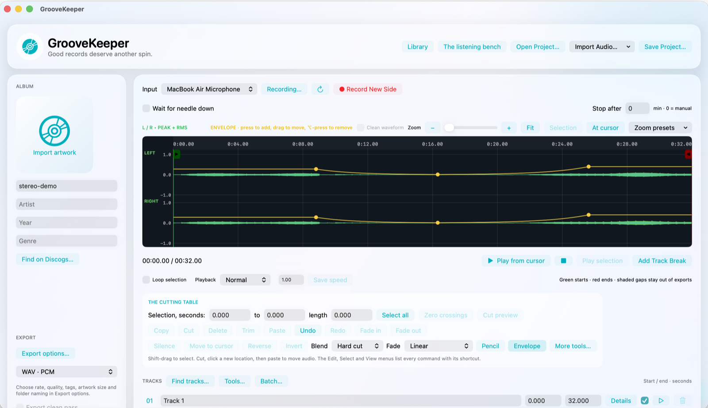
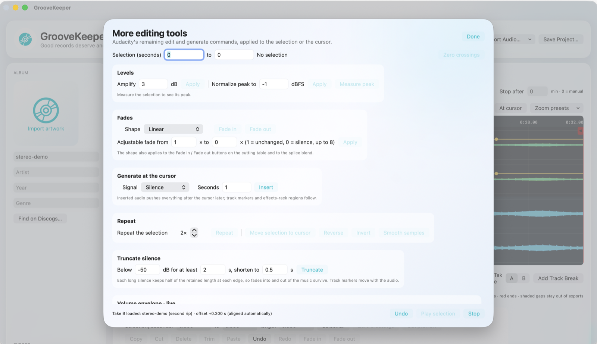
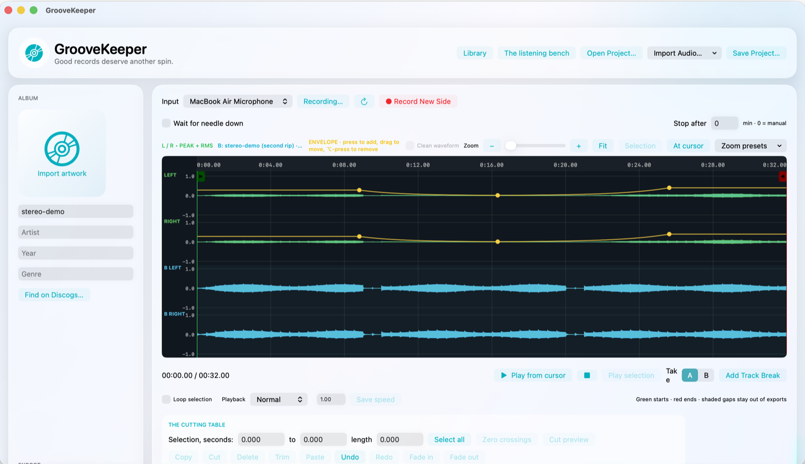

Notes · September 2026
GrooveKeeper: a vinyl app one AI started and another finished.
I rip records with VinylStudio and a pipeline that carries them to the old MacBook Pro. VinylStudio is fine, but it is someone else's program with someone else's ideas about what a click sounds like. So I asked for my own: a native Mac app that records a side, takes the clicks out, lets me cut it up, and hands the album to the pipeline. OpenAI's Codex built the first half. It ran out of usage in the middle of a version. Claude Code picked up the folder and built the rest.

It started with Codex
On the 4th of September I described the app to ChatGPT and let Codex loose on it. Over a day and a half it produced something real: a recorder that waits for the needle to drop, a timeline with track markers, a click detector, hum and rumble filters, five-band EQ, exports to every format I care about with tags and artwork, Discogs lookup, a batch panel, even DSD tools and CD burning. It went through five numbered versions and kept a FEATURES.md file honest about what was done, what was missing and what had only been tested on synthetic audio. I liked that about it.
Then, partway into 0.6, it stopped. Not because it finished: my ChatGPT usage ran out. It left behind an effects rack, a crash-recovery system and a VinylStudio importer that were nearly done, a wide-damage repair test that crashed every time it ran, and a share link to the conversation.
And ended with Claude
I gave Claude Code the folder and the link and asked it to finish. It read Codex's logs first, found the crash (the detector's noise-floor estimate could not cope with a burst of damage wider than a click), fixed the maths, and shipped 0.6 that night. Then it asked what was still missing, I said "build all the missing features and make the AI restoration better", and it did, in three more versions across the next ten hours.
The restoration work is the part I would not have known how to ask for. VinylStudio saves its repairs in a sidecar file with an undocumented binary format. Claude decoded it, validated the decoding against VinylStudio's own corrected export, and turned one real 56-minute side into about ten thousand labelled clicks and six thousand "this is a drum, leave it alone" vetoes. It trained a small convolutional network on the first 45 minutes and measured it on the last eleven, which it never saw. The old detector, trained on synthetic tones, found none of VinylStudio's repairs there. The new one finds 86%, and through the whole pipeline of gates and guards the app now repairs 62% of the events VinylStudio repaired, against 27% before. It also touches about 95 short spans a minute that VinylStudio skipped, and it told me plainly that nobody has yet listened to decide whether those are crackle or music.
Both tools were good at saying what they had not done. Codex's feature list marked physical disc burning and authenticated Discogs as untested. Claude's release notes say which numbers came from held-out audio, which came from a synthetic fixture, and that the one end-to-end send to the other Mac was deliberately not run from the app, because anything dropped in the real staging folder gets imported into my library a minute later. I trust the parts that are claimed because the parts that are not claimed are listed next to them.

What it does now
- Records a side from the Scarlett, waiting for the needle, stopping on a timer or on silence, with live RIAA or a custom curve if the input is flat.
- Restores it: the trained click detector with percussion and brass guards, wide-damage review, hum, rumble, hiss, clipping repair, spectral band repair, an editable effects rack, and a review list where every repair can be heard and vetoed.
- Edits like Audacity. Every command in Audacity's Edit, Select, View and Transport menus has an equivalent, with the same ideas: zero-crossing snapping, cut preview, a pencil for redrawing samples, a live volume envelope, crossfaded splices. Every edit is one undo step that survives a relaunch.
- Compares takes. A second rip of the same side stacks under the first, aligned automatically to the sample. Switch between them while listening, and patch a scratch from the better rip.
- Delivers. Exports to WAV, AIFF, FLAC, ALAC, AAC, MP3, Ogg and WMA with tags, CUE sheets, CD burning, Music.app, and, since 0.8, one menu item that renders the album exactly the way
vinyl-sendexpects and drops it into the staging folder for the pipeline to carry to the other Mac. A batch recipe can do the same for a shelf of albums.

By the numbers
Claude's half was one session that started at 10:36 pm on the 5th of September and ended at 8:32 the next morning, with the context summarised and continued three times along the way. I sent fourteen messages. It sent 775 responses and made 445 tool calls: compiling, running the eighteen test suites, driving the app's own menus to check the interface, notarizing four builds with Apple and installing them.
| Model | Responses | Output tokens | Total tokens |
|---|---|---|---|
| Fable 5.1 | 775 | 2,144,810 | 343,753,245 |
As with the iTunes remote, almost all of that is cached context re-read on every turn. The writing is the 2.1 million output tokens: 9,400 lines of app, 2,200 lines of tests, the training scripts, and the documentation that says what was and was not checked.
What I would tell someone doing the same
Handing a half-built project from one AI to another worked because the first one wrote things down. The logs, the feature audit and the failing test were the handover document; nobody had to explain the code. The second one's first move was to read all of it before changing anything, which is also what I would want from a person.
The app is a personal tool tied to my turntable, my library and my two Macs, so it is not published. The source and the notarized build live in my Codex folder, and the version notes are in the app's own README.